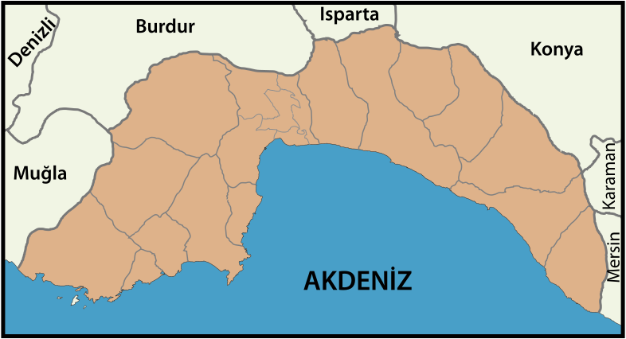
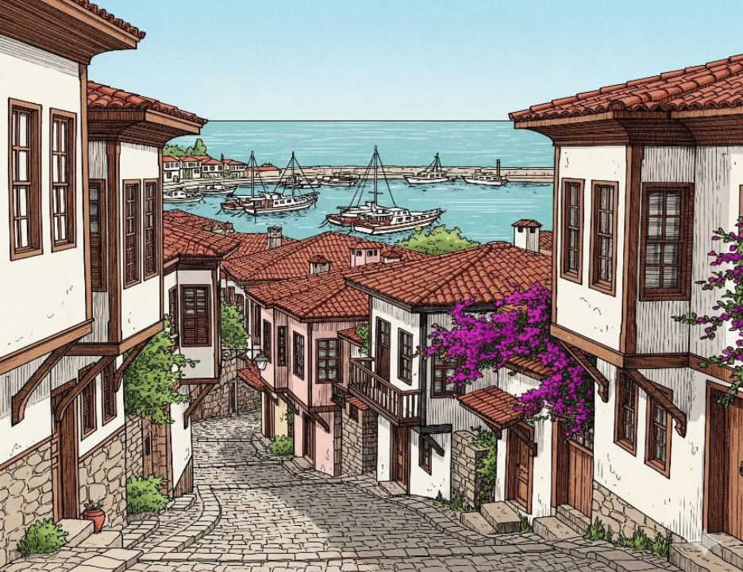
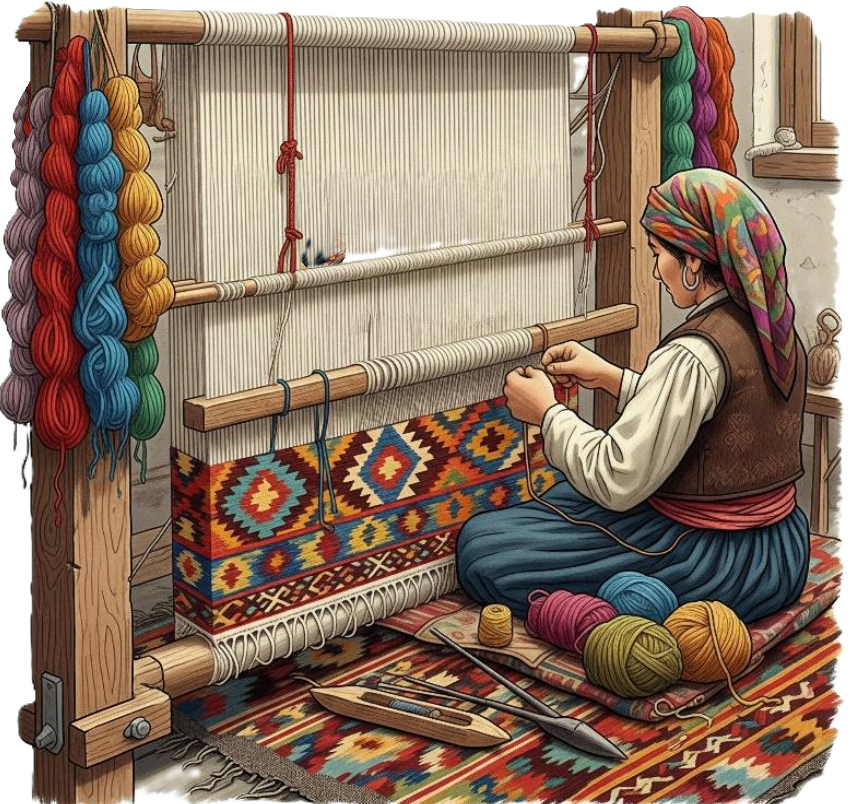

Antalya'nın Kültürel Zenginlikleri
Ana Sayfa
Haritadaki ikonlara tıklayarak Antalya'nın kültürel zenginlikleri hakkında bilgi alabilirsiniz.



Aspendos Antik Kenti
Antalya Piyazı
Konyaaltı Plajı
Kaleiçi

Düden Şelaleleri
Geleneksel Dokumacılık
